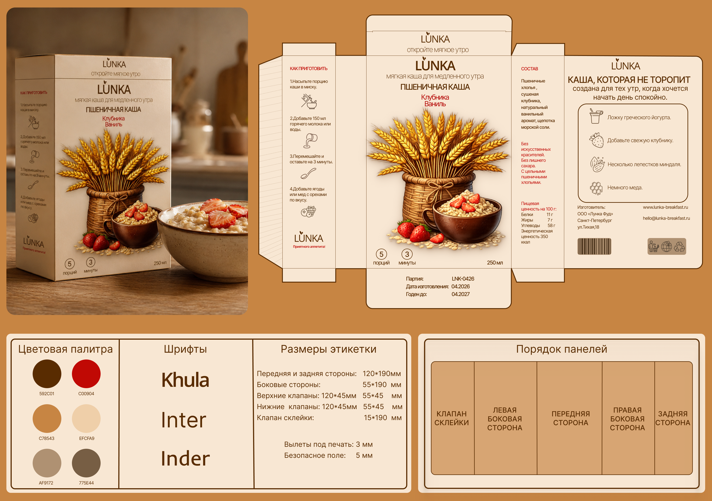

LUNKA
Дизайн коробки пшеничной каши LUNKA: иллюстрация, развёртка, спецификация цвета, шрифтов и размеров этикетки.

- Клиент
- LUNKA — бренд завтраков
- Задача
- Разработать упаковку пшеничной каши LUNKA: цельную развёртку коробки под печать, включая все пять панелей (лицевая, боковые, клапан склейки, задняя сторона), с иллюстрацией, инструкцией по приготовлению, составом и рецептом подачи.
- Роль
- Графический дизайнер: концепция, иллюстрация, вёрстка развёртки, подбор шрифтовой пары и цветовой палитры, подготовка технической спецификации (размеры, вылеты под печать, безопасное поле) для типографии.
Категория круп и каш на полке обычно решается либо через фотографию готового блюда крупным планом, либо через мультяшную иллюстрацию — задачей было найти третий путь: тёплую, почти акварельную иллюстрацию снопа пшеницы в плетёной корзине рядом с миской каши, которая читается как «уютный завтрак», а не как фабричный продукт.
Развёртка построена по принципу функционального зонирования: лицевая панель отдана образу и названию вкуса, левая боковая — пошаговому рецепту приготовления с иконками, правая боковая — составу и пищевой ценности, задняя — истории бренда, способу подачи и реквизитам производителя. Такое разделение позволяет покупателю найти нужную информацию за секунды, не разворачивая всю коробку. Тёплая землисто-коричневая палитра с одним акцентным красным (для названия вкуса — «Клубника Ваниль») и парой шрифтов Khula/Inter/Inder держат весь визуальный язык бренда единым на любой будущей вкусовой линейке.
Готовая развёртка с технической спецификацией (размеры панелей, вылеты, безопасное поле) передана в типографию для печати тиража и легла в основу дизайн-системы для будущих вкусов линейки LUNKA.